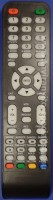

Információ
Mobil: +36-30-7562289 /Viber/
Addig ne dobja el a rossz távirányítóját míg a pótlása nem rendeződött, mert problémásabb esetekben sokat segíthet!
A fényképeken főként az eredeti távirányítók szerepelnek, mert ezeket használják az emberek évek óta és a beazonosítás egyszerű módja lehet. Tehát, amennyiben még rendelkezik az eredeti rossz távirányítóval, akkor a nagy képpel összehasonlítva kiválaszthatja az Ön készülékéhez alkalmas típust. Az eredeti távirányító hiányában a TV kezelési útmutatójában található kép vagy rajz is segíthet az azonosításban. A távirányító keresés alkalmával a kis képeken sokszor egyformának tűnő távirányítók közt különbséget tenni a nagy képpel lehet, melyet a kis képre való rákattintással hívhatunk elő. Ezen már jól kivehetőek a feliratok és funkciók. A kiválasztásnál segíthet az eredeti távirányítón található típusjelzés is. Ilyenek lehetnek az LG-nél az AKB vagy MKJ, SAMSUNG-nál AA59 vagy BN59, PANASONIC-nál N2QA vagy EUR, SONY-nál RM, RMT, vagy RMF, THOMSON-nál RC vagy RCT, GRUNDIG-nál a TP jelzésekkel kezdődő azonosítók. Ugyanebben a sorrendben egy-egy példa felsorolva: AKB74115502, BN59-00465A, N2QAYB000752, RMT-TX101D, RCT100, TP715. A típusjelzések lehetnek a távirányítók elején, a hátlapján vagy az elemeknél. Amennyiben a távirányítónak van ilyen típusszáma, akkor feltüntetem, ha nincs, akkor egy jellegtelen sorszámot kap. Például a FUNAI-nál F2, F3, F31, F4. Az eredeti távirányító pótlása sokszor kinézetre más távirányítóval oldható meg. A képeknél látható továbbá, hogy a rossz vagy hiányzó távirányító mivel pótolható.
Eredeti típus:
Gyári eredeti távirányító. Főleg az LG, PANASONIC, SAMSUNG, SONY, TELEFUNKEN és HITACHI gyártmányok alatt szerepelnek.
A legtöbb esetben persze jóval drágábbak, mint az utángyártott típusok. Minőségileg változó, de a 3-5 év élettartamot azért általában elérik. Néhány esetben viszont mással nem lehet őket kiváltani. Ilyen a részben vagy egészben bluetooth rendszerűek, melyek úgynevezett légegér, vagy hangalapú keresés funkcióval rendelkeznek, és ezeket szeretnénk használni is. Az alábbi képeken megfigyelhető, hogy mindig van rajtuk embléma, illetve a gyártó neve. Létezik pár kivétel, amikor is a távirányító eredeti ugyan, de nem látható rajta semmilyen jelölés. Ezek a "No Brand" típusok. Minőségileg egyeznek a márkajelzéssel ellátott eredeti távirányítókkal, és az áruk is hasonló. Máshol ugyan már leírtam, hogy az eredeti távirányítók régebben sokkal jobbak voltak. Manapság a 3-5 év élettartamával sokan elégedetlenek, mivel maguk a berendezések sokszor több százezer forintba kerültek. Az előnyei közé tartozik, hogy a sok különféle alakú nyomógomb miatt a kezelésük könnyű. Már rövid ismeretség után akár teljes sötétségben is gyorsan meg lehet találni az adott funkciógombot.
Eredeti helyett használható típus:
Gyári eredeti távirányító. Az LG, PANASONIC, SAMSUNG, SONY, TELEFUNKEN, HITACHI, valamint más gyártmányok alatt is szerepelhetnek választék bővítésként. Gyakran előfordul az a helyzet, hogy egy konkrét típusú vagy számú eredeti távirányító már nem kapható, de egy másik szintén eredeti típussal amúgy kiváltható lenne. A funkciókban lehetnek ugyan kisebb eltérések, melyek legtöbbször nem befolyásolják a használatot, mert ezek általában nem olyan lényeges nyomógombok. A konkrét eltéréseket egy aktuális rendelés során majd ismertetni fogom. Az árak és a minőség tekintetében teljesen megegyezik a fentebb lévővel. Az előnyök és a hátrányok is értelemszerűen egyeznek.
Minőségi utángyártott típus:
Teljesen más kinézetű mint az eredeti, de kompatibilis vele.
Kifejezetten az eredeti távirányító helyettesítésére szolgál, tehát nem kell beállítani vagy beprogramozni rajta semmit. Az elemek megfelelő behelyezése után rögtön használható. Az új távirányító formájában és a gombok elrendezésében más. A gombok feliratai és funkciói általában egyeznek az eredetivel. A legtöbb ilyen minőségi utángyártott távirányítón több nyomógomb található mint az eredetin. Ezeknek nem lesz jelentőségük. A CLASSIC típusoknál a lenti képeken az első helyen szereplő változat fordul elő gyakrabban. Ennél a távirányítónál nagyobbak az alapvető funkciók nyomógombjai, mely a távirányító felső részében található. Ezeket idősebb emberek is viszonylag könnyen tudják kezelni. A másik kettő távirányító valamivel régebbi, körülbelül 2015 előtti tévékészülékek helyettesítő típusai, így egyre ritkábban fordulnak elő az oldalaimon. Mindegyik távirányító működéséhez 2 darab AAA-s elem szükséges. Ezen távirányítók megbízhatósága és élettartama megegyezik az eredeti típusokkal. Tehát átlagos használat mellett szintén körülbelül 3-5 évre lehet számítani.
Utángyártott típus eredeti kinézetben:
Legtöbbször ugyanolyan mint az eredeti távirányító, vagy nagyon hasonló kinézetű.
A legtöbb ilyen távirányító 3800 és 5800 forint között van. Olcsóságuk miatt közkedveltek. A másik előnye az árán kivül, hogy a különböző méretű és formájú nyomógombokat könnyebb megtalálni, így használatuk teljesen egyértelmű. Sajnos viszont több jóval nem tudnak szolgálni, tehát csodát ne várjunk tőlük. Nem minden eredeti távirányítónak van olcsó utángyártott változata. Sok esetben csak olyat tudok küldeni, mely kisebb-nagyobb mértékben eltér az eredetitől, de a funkciókat tekintve megfelelő lesz. Néha csak a távirányító formájában lesznek eltérések, mivel ugyanazokat a távirányítókat legyártják különböző kinézetekben, esetleg más színekben. A legtöbb ilyen fajta távirányító szinte csak tévékészülékhez készül. A minőségüket tekintve nagyon különbözőek. Léteznek elég tűrhetően megépített szériák, de olyanokkal is találkoztam nem egyszer, hogy a megérkezése pillanatában már rossz volt, vagy bosszantó hibákkal rendelkeztek. Pár hiba a sok közül a teljesség igénye nélkül. Sokuknak van valamilyen kátrányos szaga. Már az új távirányítón is karcok, foltok és más szépséghibák lehetnek. Az elem fedlapja gyakran leesik szinte magától, máskor szorul és letörnek a pöckök róla. Az elemérintkező rugója legtöbbször csálé, nem pontosan az elem negatív pontjának a közepére illeszkedik. Ritkán az elemeket is nehezen lehet behelyezni a távirányítóba. A nyomógombok működtetése során lehet érezni igazán a fapados mivoltát, ugyanis nem olyan precízen, és nem olyan egyenletesen kapcsolnak, mint a gyáriak. A műanyag ház olyan vékony néhány típusnál, hogy nem bír el egyetlen szétszedést sem, mert a távirányító szélei egyszerűen letöredeznek. Megeshet, hogy az újonnan kapott távirányítóban már zörögnek a letört műanyag darabkák. A távkapcsolóban található nyomtatott áramkör rendkívül vékony, így könnyen reped vagy törik, ha hétköznapi erőbehatás éri. Végül az utángyártott távirányítói jelei pontatlanok, és hibással is találkoztam már nem is egyszer. Vagyis működni működött, de mégsem irányította a készüléket. Élettartamuk 1-3 év, és nem jellemző rájuk a megbízhatóság. Az alábbi példák utángyártott típusok, melyek az eredeti távirányítók másolataiként láttak napvilágot valahol Kínában.
 |
Készített, illetve legyártott típus /utángyártott/:
Teljesen más kinézetű mint az eredeti, de kompatibilis vele.
Olyan távirányítókat amelyeket pillanatnyilag semmilyen módon nem lehet pótolni, egy speciálisan átalakított távirányítóból elkészítem az eredeti funkciókkal. Ilyen esetekben nagy segítség, ha az eredeti távirányító még megvan akármilyen állapotban. Ugyanis az eredeti távirányító felélesztése esetén könnyebb kinyerni belőle az információkat, melyet számítógépre mentve már szinte biztos a siker. Amennyiben az eredeti távkapcsoló annyira sérült, hogy nincsen remény a feltámasztására, akkor a nyomógombok a chiphez való bekötésének a kielemzése után lehet olyan adatokat kinyerni, mely az új távirányító elkészítésében segíthet. Legtöbbször a kettő kombinációja fordul elő, amikor a gombok egy része a panel repedése vagy törése miatt nem működik, de a másik fele még ad le jelet. Az alábbi távirányítók közül az első kettőről részletes leírást a Letöltés menüpont alatt olvashat. A harmadik típusról több infót az Érdekes menüpontnál talál. Ezek a távirányítók kommersz TV, HIFI, és DVD vezérlésére, valamint ezen belül speciálisabb igények kielégítésére ajánlott. (Lásd a cikkeket!)
 |
 |
Ön sehol nem találja a keresett távirányítót? Hívjon fel vagy érdeklődjön e-mail segítségével! A szállítás általában 1 héten belül megtörténik. Sajnos ritkább esetekben előfordul, hogy hiány keletkezik a nagykereskedésben és így akár több hét is lehet egyes távirányítók leszállítási ideje. Az esetleges kellemetlenségért előre is elnézést kérek. Az utánvét költsége házhoz 2000,-Ft, automatába 1800,-Ft.